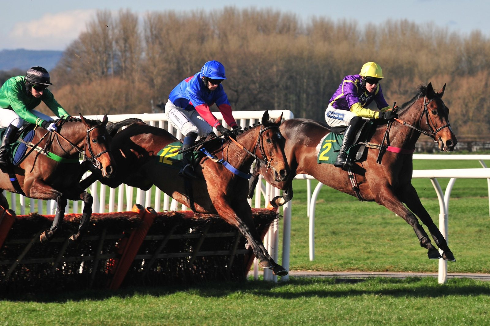

Talk Of New York llega como favorito a Ascot, con More Thunder y Zavateri al acecho
El Qatar Racing British Champions Day se corre el sábado en Ascot. Talk Of New York encabeza las apuestas en una de sus pruebas, aunque sus dudas dejan sitio a los rivales.

El cartel de favorito le llega a Talk Of New York tras su buena actuación en los Joel Stakes, su última salida. Antes había sido tercero en los St James's Palace, por detrás de Bow Echo y Gstaad, en una carrera en la que se le vio todavía verde, algo que ha acompañado a buena parte de sus actuaciones. Corre reservado atrás, y el planteamiento previsible de la carrera encaja con ese estilo.
More Thunder llega con otro perfil. Ha costado mucho ganar con él, pero en su última salida, en Doncaster, rindió a buen nivel. Su jockey, Tom Marquand, atribuyó la mejora a haber dejado atrás el terreno rápido del verano. En Ascot tiene un historial excelente, y un ritmo fuerte por delante le favorecería.
Zavateri es otro de los tres años de la carrera. Su forma y su actitud apenas plantean dudas, y aún tiene margen para progresar sobre esta distancia. La lectura es sencilla: el favorito tiene más que demostrar que la cotización que lleva.
En la lista figura también Constitution River, cuyo comportamiento en el mercado ha resultado irregular en las semanas previas.
Por Martín Larrañeta